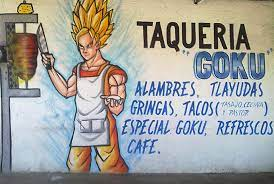

Look at how cool goku is
Az emberek túlságosan alábecsülik a DBZ-t. Tegyük fel, hogy ez mindenki
a kanonikus sorozat végén. Ha szerinted a GT nem kánon, ne vitatkozz.
Nem érdekel, ha azt hiszed, Akira Toriyamának nem sikerült. Ő rajzolta
az SSJ4 művészetet, ő felügyelte az egész produkciót, és láthatóan
jóváhagyta azt. A GT szerintem canon, ha nem tetszik nagyon. OK, vége a
GT-nek. Tegyük fel, hogy ez Goku a Dragon Balls elnyelése előtt, de
közvetlenül az Omega Shenron legyőzése után. Teljes erővel, alapban
felnőttként már a legerősebb kitalált karakterekkel vetekedne. Ezen a
ponton nagyjából egy isten, és isteni ereje akár 5000-szeresére is
megsokszorozódhat az SSJ4-gyel. Az egyetlenek, akik ezen a ponton
szembeszállhatnak vele: Elder God Demonbane, The Living Tribunal, The
One Above All és talán néhány másik srác.
Most vegyük a DB legerősebb nem hipotetikus karakterét: SSJ4 Gogeta.
Ő két istenfélő hatalom, szorozva 5000-et, összeadva, majd
megszorozva 1000-rel. Most nagyjából a legjobb 5-ben van. Most
az univerzum hipotetikus, de lehetséges karaktereiről. Az SSJ4
Vegito ugyanaz, mint a Gogeta, de ehelyett összeadva a
teljesítményük megszorozódik 14 000-rel. OMG ezen a ponton. Az
SSJ4 nem a legerősebb forma. És nem, nem az SSJ5-re gondolok. Csak várj.
Tegyük fel, hogy Bulma készített egy klónozógépet. Goku klónját
és Vegeta klónját készíti. Leszedik Kibito Kai és Old Kai fülbevalóját,
így most két Potara fülbevalójuk van. Egyik G és V biztosíték:
Gogeta A másik G és V biztosítékot biztosítsa egy készlet fülbevalóval:
Vegito. Egyéb fülbevaló készlet Gogeta és Vegito biztosítékot a Gogitoba.
A bázisán lévő Gogito megúszhatja a Living Tirbunalt a pénzéért, mert
ez Gogeta és Vegito 14 000-szerese. Most képzeld el...az öreg Kait...és
Gogitót. Az öreg Kai elvégzi azt a rituálét, amit Gohannal végzett...